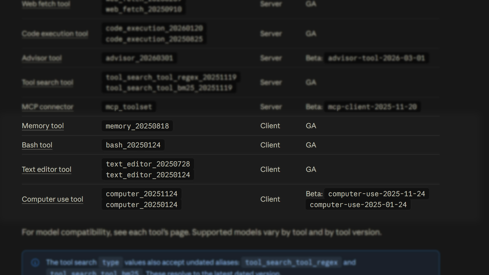
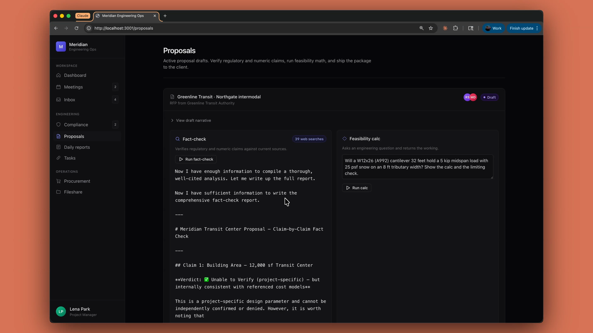

Встроенные инструменты
Чему научитесь
Видео 2:44 и текст урока
К концу урока вы сможете:
- отличать серверные инструменты (web search, code execution, web fetch), которые выполняет Anthropic, от клиентских (memory, bash), которые выполняет ваш код;
- подключать серверный инструмент одной записью в массиве
toolsи получать результат в том же ответе, без цикла агента; - находить в ответе блоки
server_tool_useи блоки результатов инструментов рядом с обычными блокамиtext.
Видео и текст урока.
Можно создавать собственные инструменты, но некоторые возможности нужны так часто, что Anthropic поставляет их готовыми. Код писать не нужно. Песочницу (sandbox) держать у себя не нужно. Вы просто объявляете инструмент, а выполняет его Anthropic.
Серверные инструменты: объявляете вы, выполняет Anthropic
Anthropic предоставляет серверные инструменты (server tools), которые работают на её инфраструктуре. Выполняете их не вы, а Anthropic. Поэтому для таких вызовов не нужен цикл агента: Claude вызывает инструменты сам, и результат приходит в том же ответе.
Главные из них:
- Web search (веб-поиск) — ищет в интернете и возвращает результаты со ссылками на источники (citations);
- Code execution (выполнение кода) — пишет и запускает код на Python в песочнице;
- Web fetch — загружает полное содержимое страниц по URL.
Два серверных инструмента в одном файле
Посмотрим на некоторые главные инструменты в одном файле: два вызова messages.create, один с веб-поиском, другой — с выполнением кода.
import anthropic
client = anthropic.Anthropic()
# Call 1: web search — Anthropic runs the search server-side
search_response = client.messages.create(
model="claude-opus-5",
max_tokens=1024,
tools=[{"type": "web_search_20260209", "name": "web_search"}],
messages=[
{"role": "user", "content": "What is Anthropic's latest model release? Answer in one sentence."}
],
)
for block in search_response.content:
if block.type == "server_tool_use":
print(f"Tool call: {block.name} — {block.input}")
elif block.type == "text":
print(block.text)
# Call 2: code execution — Claude writes and runs Python in a sandbox
code_response = client.messages.create(
model="claude-opus-5",
max_tokens=1024,
tools=[{"type": "code_execution_20260120", "name": "code_execution"}],
messages=[
{"role": "user", "content": "Calculate the mean and standard deviation of [1, 2, 3, 4, 5, 6, 7, 8, 9, 10]"}
],
)
for block in code_response.content:
if block.type == "server_tool_use":
print(f"Tool call: {block.name} — {block.input}")
elif block.type == "bash_code_execution_tool_result":
print(f"stdout: {block.content.stdout}")
elif block.type == "text":
print(block.text)
Обратите внимание на две вещи:
- Цикла агента здесь нет. Мы не проверяем
stop_reason. Мы не отправляем результаты инструментов обратно. Anthropic выполняет инструмент на своей стороне, и результат уже есть в ответе. - В ответе появляются новые типы блоков. Блок
server_tool_use— для вызова инструмента, блок результата выполнения кода — для вывода, плюс обычные блокиtext.
Запускаем
В примере с веб-поиском программа напечатает вызов инструмента, который сделал Claude, а затем ответ в одно предложение о последней вышедшей модели; в текст ответа встроены ссылки на найденные источники.
В примере с выполнением кода вы увидите сам код на Python, который написал Claude, вывод (stdout) песочницы, в которой он выполнялся, и итоговый текстовый ответ.
Нам не пришлось поднимать поисковый краулер. Мы не запускали песочницу для Python. Мы объявили два инструмента и получили обе возможности даром.
Другая категория: клиентские инструменты
Стоит знать, что есть и другая категория. Клиентские инструменты (client tools) выполняются там же, где работает ваш код. Anthropic публикует их схемы и обучает на них Claude, так что описывать схему самому не нужно. Два примера:
- Memory — Claude читает и записывает память, которая сохраняется между сессиями;
- Bash — постоянная оболочка bash, в которой Claude может выполнять команды.

Устроены они так же, как собственный инструмент, только схема встроена в Claude. Выполняет их по-прежнему ваш код: для memory в четырёх SDK есть готовый помощник (helper), который обрабатывает обращения Claude к памяти в предоставленном вами хранилище, а для bash оболочку запускает само ваше приложение.
Почему это важно в продакшене
В продакшен-приложении это самый короткий путь к функциям, на которые иначе ушли бы недели. Например, на основе веб-поиска можно построить эндпоинт для проверки фактов (fact-check), который сверяет каждое утверждение черновика о цифрах и нормативах с актуальными данными в интернете.

И всё же напомним: то, что утверждение подтверждается в интернете, ещё не значит, что оно верно. Всегда перепроверяйте работу Claude.
Итог
- Серверные инструменты — web search, code execution, web fetch — объявляются в вашем массиве
tools. Выполняет их Anthropic. - Результат приходит в том же ответе, и цикл агента не нужен. Ищите блоки
server_tool_useи блоки результатов инструментов рядом с обычными текстовыми блоками. - Клиентские инструменты, такие как memory и bash, выполняются там, где работает ваш код. Схема встроена в Claude, в четырёх SDK есть помощник для memory, а для bash оболочку запускает ваш код.
- Идея «размещено у Anthropic» работает и в самом крупном масштабе: managed agents применяют её ко всему агенту, а не к одному инструменту.
Дальше
Следующий урок — «Skills»: папки с инструкциями, скриптами и ресурсами, которые Claude подгружает, чтобы выполнять специализированные задачи так, как принято у вас.
Оригинал урока: Built-in tools.